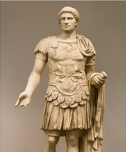

1. Il dipinto che mi ha colpito di più

Un'opera d'arte affascinante vista nella galleria principale
Questo dipinto mi ha catturato per i suoi colori intensi e per l'espressione del volto del personaggio raffigurato. È come se raccontasse una storia senza parole.
2. Un'antica scultura

Scultura romana in marmo esposta nella sala archeologica
La scultura era alta quasi due metri e mostrava un antico guarriero romano. I dettagli del viso e dell'armatura erano incredibilmente realistici
Le cose che ho imparato oggi:
Le statue romane venivano spesso dipinte a colori vivaci
Molti dipinti nascondono simboli e significati nascosti
Ogni opera ha una storia unica
© 2025 Insegnante HTML